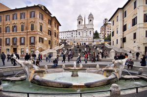

Rome, Coliseum, Catacombs, Roman Forum, Moses of Michelangelo, Vatican Museums, Saint Peter’s Basilica and Sistine Chapel, and all special sites of Rome.
Visit the Vatican City, enclosing the world’s richest art collection, to discover the highlights of the Museums, including Raphael’s Rooms, the ancient Greek and Roman sculptures, the Renaissance Tapestries, the Gallery of Maps with views of the Vatican Gardens, the Sistine Chapel home to Michelangelo’s awesome frescoes and Last Judgment. Enjoy anecdotes and accounts of famous artists and popes giving you a fuller understanding and appreciation of the renaissance spirit which heralded great changes in thoughts, art, architecture, music and human conditions.
 Magical sensations produced by splashes of the Trevi Fountain, the lazy and silent flow of the Tiber river and the elongated shadows cast on cobblestones by the Pantheon’s unique Dome will reveal the bewitching air of the Eternal City as we visit hidden renaissance and baroque treasures. Our promenade will continue to Emperor Hadrian’s Mausoleum and legendary St. Angel’s Bridge to enjoy a fantastic sight of the Pope’s imposing Castle-Fortress and to enjoy an insuperable view of St. Peter’s Basilica and its Colonnaded Square elegantly illuminated.
the tracks of the vast Circus Maximus where 180 thousand inflamed spectators could fervently incite their favorite heroes to victory and view the sprawling Emperors’ Palaces on Palatine Hill. Courageously dare placing your hand in the oldest “lie detector” in the world, the famous “Mouth of Truth” and then continue your walk to admire the well-preserved Temples of Hercules and of Portunus situated on the banks of the Tiber. Discover the most recent archaeological excavation-site in Rome city to visit the Portico D’Ottavia, Theatre of Marcellus and the nearby old Jewish Ghetto of Rome . Conclude your tour at the authentic spot of Julius Caesar’s assassination on the Ides of March, .